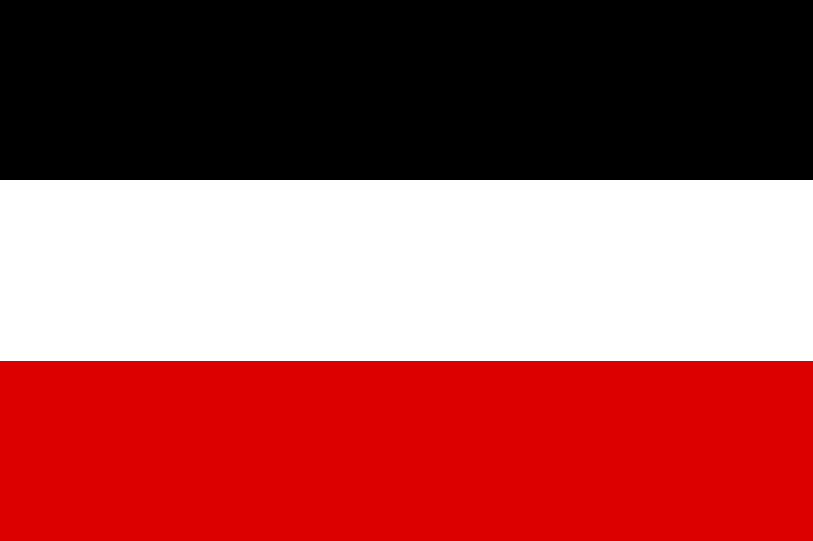

Geschiedenis
Het Duitse Keizerrijk, gedomineerd door Pruisen, was niet, zoals men in 1848 had gewild, een liberale constitutionele monarchie, maar autoritair, anti-liberaal en sterk militaristisch van gestalte. Het keizerrijk was een vorstenbond onder Pruisische leiding, maar waarbij de afzonderlijke staten op cultureel en bestuurlijk gebied een grote mate van soevereiniteit genoten. Met name aan het zelfbewuste Beieren waren concessies gedaan.
Foto 1: De vlag van het Duitse Keizerrijk.
Rijkskanselier Bismarck trachtte allereerst in de zogenaamde Kulturkampf de katholieke invloed in het Rijk te beperken. Hierna nam hij de socialisten op de korrel, enerzijds door de repressieve Socialistenwet van 1878, anderzijds door de sociale zekerheid te vergroten en hun aldus de wind uit de zeilen te nemen: in 1883 werd een ziekteverzekering ingevoerd, in 1884 een ongevallenverzekering en in 1889 een pensioenverzekering.
Internationaal trachtte Bismarck het machtsevenwicht door een gecompliceerd stelsel van allianties te bewaren. Door verschillende bondgenootschappen lukte het hem erfvijand Frankrijk te isoleren. Na het Congres van Berlijn (1878), dat Duits-Russische spanningen tot gevolg had, sloot hij met Oostenrijk de Tweebond, die in 1882 door het toetreden van Italië tot Driebond werd. In 1887 kwam op Bismarcks aandringen het Herverzekeringsverdrag met Rusland tot stand, dat voor een periode van drie jaar wederzijdse neutraliteit in een eventuele Europese oorlog garandeerde. Het Duitse keizerrijk verwierf de kolonies in Afrika van Togo, Duits-Kameroen, Duits-Zuidwest-Afrika (nu Namibië) en Duits-Oost-Afrika (nu Tanzania, Rwanda en Burundi), dat in oppervlakte bijna dubbel zo groot was als het moederland. In de Stille Oceaan bezat het Duits-Nieuw-Guinea. Toch was Duitslands koloniaal rijk bescheiden in vergelijking met het Britse of het Franse.
Eerste Wereldoorlog (1914-1918)
Na de moord op Frans Ferdinand van Oostenrijk vond Duitsland zich naast Oostenrijk-Hongarije en Italië in de Eerste Wereldoorlog tegenover de Triple Entente. Het enthousiasme voor de oorlog was aanvankelijk niet alleen in Duitsland groot, maar ook bij de andere deelnemende landen zoals Frankrijk (dat hoopte Elzas-Lotharingen terug te veroveren van Duitsland). De Duitsers wilden met de uitvoering van het Schlieffenplan Frankrijk snel verslaan waarna met Rusland zou worden afgerekend. Tegen kerstmis 1914 bleek dit plan mislukt en begon aan het westfront de loopgravenoorlog. Uiteindelijk bleek de prijs van de oorlog erg hoog, vanwege de voorheen ongekende verschrikkingen en massale slachtpartijen in de loopgraven. Bovendien bleef de overwinning uit: de generale staf had de weerstand van de tegenstanders onderschat en de eigen capaciteiten te hoog ingeschat. Ook stelden de geallieerden direct een blokkade van Duitsland in die al snel belangrijke tekorten veroorzaakte zoals te weinig voedsel voor de stedelijke bevolking en grondstoffen voor de industrie. De interne problemen die in alle Europese staten bestonden, vooral de sociale spanningen die werden opgeroepen door de grote armoede onder het proletariaat, kwamen in Duitsland daardoor in alle hevigheid aan de oppervlakte. De geloofwaardigheid van het bewind brokkelde af en een toenemend antimonarchistische stemming verspreidde zich door het land en in de Rijksdag begonnen de partijen te debatteren over een flinke inperking van de macht van de adel en keizer. In de grote steden werd het steeds onrustiger en vooral de socialisten en communisten kregen de wind in de zeilen.
In 1917 kon aan het oostelijke front, dankzij de ineenstorting van het Russische leger door de Russische Revolutie die een eind aan het tsaristische bewind maakte, nog een wapenstilstand met het nieuwe communistische bewind worden bedongen, die in maart 1918 tot de Vrede van Brest-Litovsk leidde. De legerleiding hoopte door de vrijgekomen troepen van het oostfront in het westen in te zetten hier alsnog een beslissende overwinning te behalen. Dit zogenaamde 'lenteoffensief', ook wel Kaiserschlacht genoemd, mislukte echter en kort hierop werd de toestand aan het westelijk front, waar de Amerikanen zich in de strijd hadden gemengd, uitzichtloos en dreigde op korte termijn de totale ineenstorting van het Duitse leger. De legerleiding, die gedurende de oorlog de feitelijke macht over Duitsland had overgenomen (zelfs keizer Wilhelm II had ten slotte niks meer in te brengen), besefte dat ze de strijd niet meer kon winnen en dat er onderhandeld moest worden met de geallieerden om de oorlog te beëindigen
Dit leidde in september 1918 tot de benoeming tot rijkskanselier van de liberale prins Max van Baden, die men als de geschikte persoon zag om onderhandelingen met de geallieerden (inmiddels inclusief de Verenigde Staten) te voeren. Matrozenopstanden in Wilhelmshaven en Kiel leidden in november echter tot de Novemberrevolutie. Prins Max verklaarde Wilhelm II op 9 november voor afgezet maar aanvankelijk wilden veel meest conservatieve en middenpartijen nog geen complete afschaffing van de monarchie en zocht men nog naar een acceptabele verwant van Wilhelm als passende vervanging van de afgezette keizer. Friedrich Ebert werd voorlopig hoofd van de regering, maar tegen diens zin riep Philipp Scheidemann nog op diezelfde dag de republiek uit, overigens om de radicale socialisten en communisten voor te zijn, die bekend zou worden als de Weimarrepubliek. Keizer Wilhelm II week op 10 november uit naar Nederland en overleed in 1941 in zijn ballingsoord Huis Doorn.
Tweede Wereldoorlog (1939-1945)
Met de aanval op Polen op 1 september 1939, overigens in samenwerking met de Russen die vanuit het oosten Polen binnenvielen, schond Duitsland het bestaande niet-aanvalsverdrag waarop het Verenigd Koninkrijk en Frankrijk de oorlog verklaarden. Deze landen vielen echter niet onmiddellijk aan, deze periode wordt de Schemeroorlog genoemd. De schemerperiode eindigde toen Duitsland op 9 april 1940 Denemarken en Noorwegen binnen viel. Denemarken bood geen verzet, Noorwegen werd te hulp gekomen door een Frans-Brits expeditiekorps dat echter bij de Noorse capitulatie op 9 juni zich terug moest trekken.
Op 10 mei viel Duitsland Frankrijk, België en Nederland aan. Nederland gaf zich na vijf dagen over, maar ook Frankrijk bezweek snel onder de inmiddels geoefende Duitse legers, de Blitzkrieg. In een eerste fase brak het Duitse leger snel door naar de kanaalkust en omsingelde daarmee het Britse expeditieleger. Van 26 mei tot 2 juni kon dat expeditieleger ontsnappen naar Engeland via de evacuatie uit Duinkerken. Daarna rukten de Duitsers verder zuidwaarts op, Parijs werd op 14 juni ingenomen en op 22 juni werd een wapenstilstand ondertekend.

Foto 2: Duitse Rijk in 1944.
In 1944 was duidelijk dat Duitsland de oorlog militair aan het verliezen was. Aan het oostfront rukten de Sovjetlegers op tot de grens met Polen. Op 6 juni openden de geallieerden een nieuw front in Frankrijk met de Landing in Normandië. Een laatste Duitse tegenaanval in het westen in december 1944, het Ardennenoffensief, mislukte. Nu ging het snel bergafwaarts met het naziregime: in januari 1945 werden de oostgrenzen overschreden door de Sovjets en even later deden de Amerikanen en Britten hetzelfde aan de westgrenzen. In april schudden de Sovjets en Amerikanen elkaar de hand aan de Elbe: Hitler trok zich terug in Berlijn en pleegde zelfmoord wanneer de Russen de stad innemen. In mei capituleerden de laatste restanten van het Duitse leger en was in Europa de oorlog voorbij. De Duitse bevolking had ook te lijden onder het oorlogsgeweld. Door de dagelijkse terreurbombardementen van de geallieerden op niet-militaire doelen, in het bijzonder op de grote Duitse steden, met het doel de bevolking in opstand te laten komen tegen de nazileiding of in elk geval te demoraliseren, kwamen 760.000 burgers om het leven.